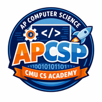

AP CSP · End-of-semester multiple-choice exam
A 40-question multiple-choice exam — a shorter, gentler version of the AP CSP exam, drawn entirely from the three exam-review units. Designed for roughly a 60-minute block.
Every distractor is built from a misconception explicitly addressed in the review lessons, and the answer letters are balanced across A/B/C/D. Scoring: 1 pt each — multiply the raw score by 2.5 for a percentage.
/apcsp/semester_exam/teacher_resources/ directly. Review lessons the exam is drawn from: /apcsp/review/.